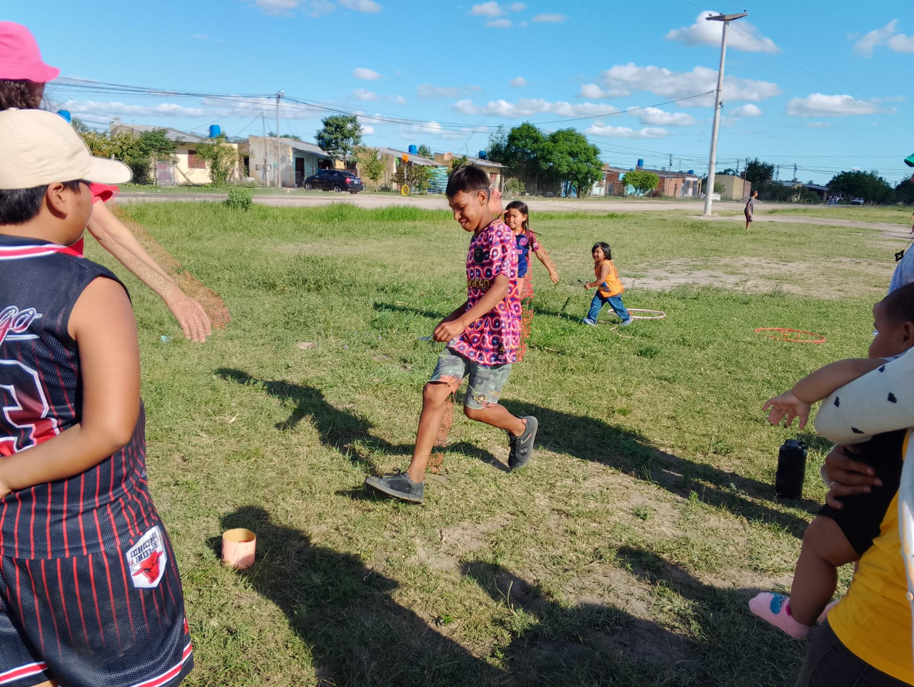
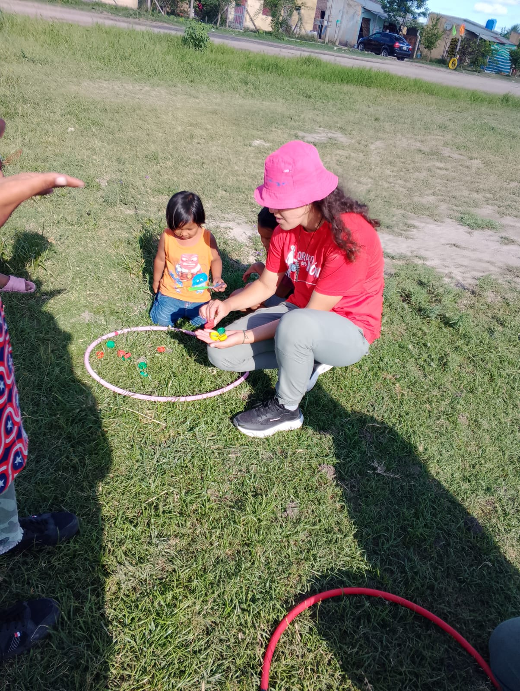
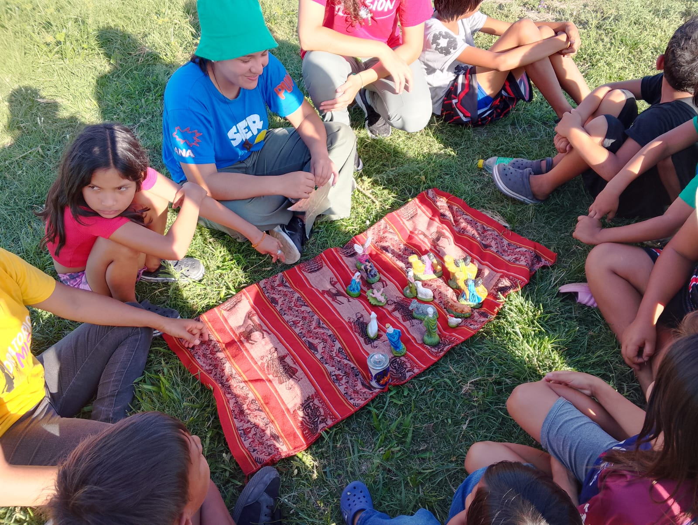
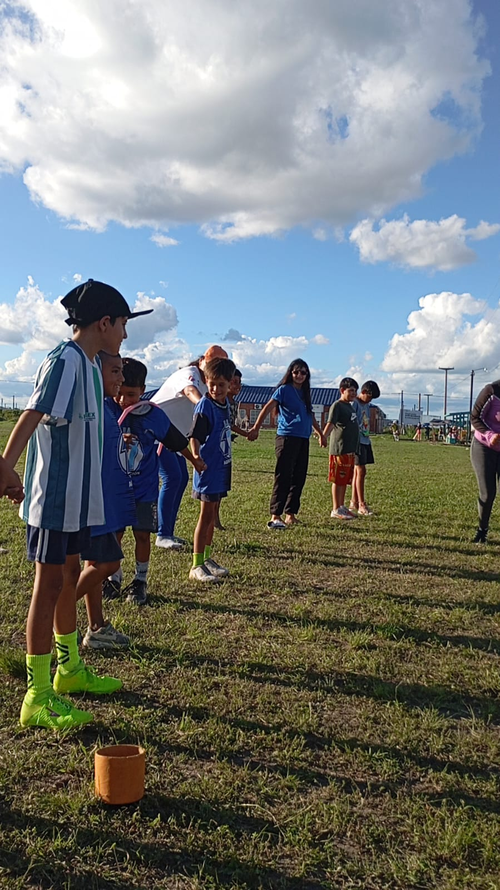
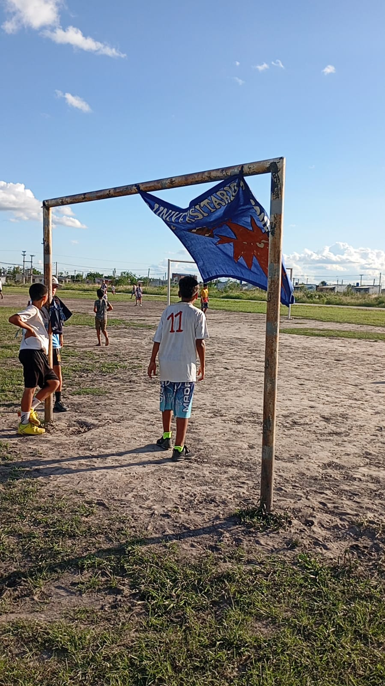
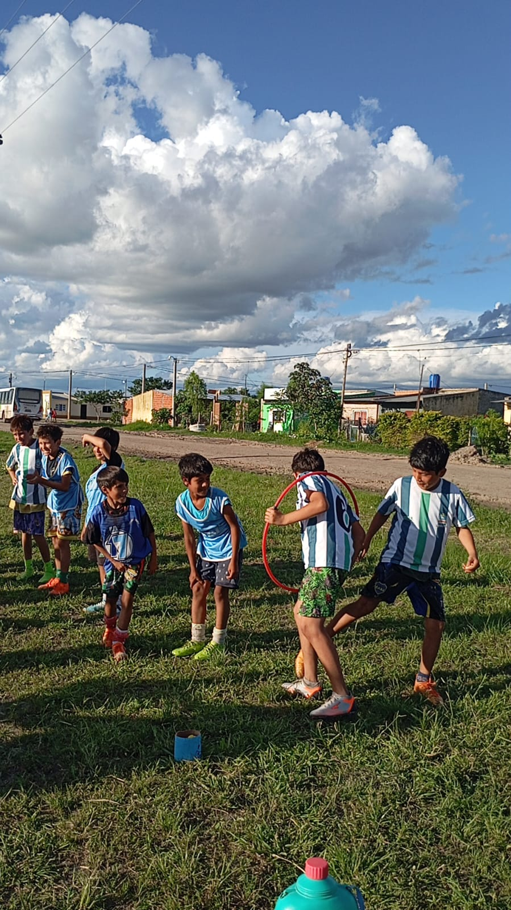
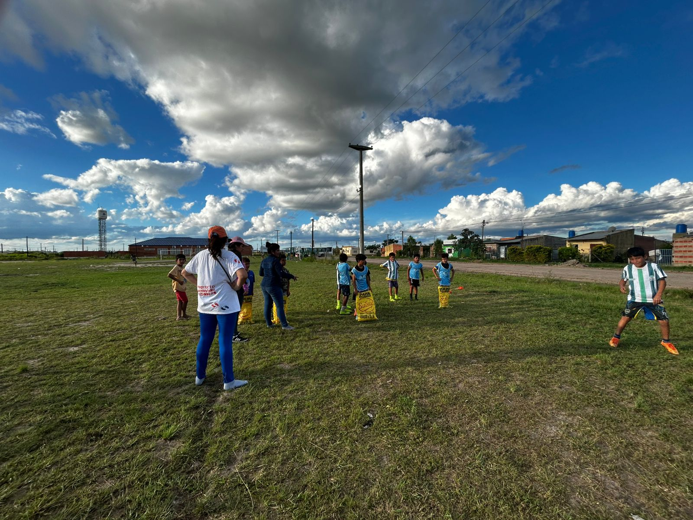
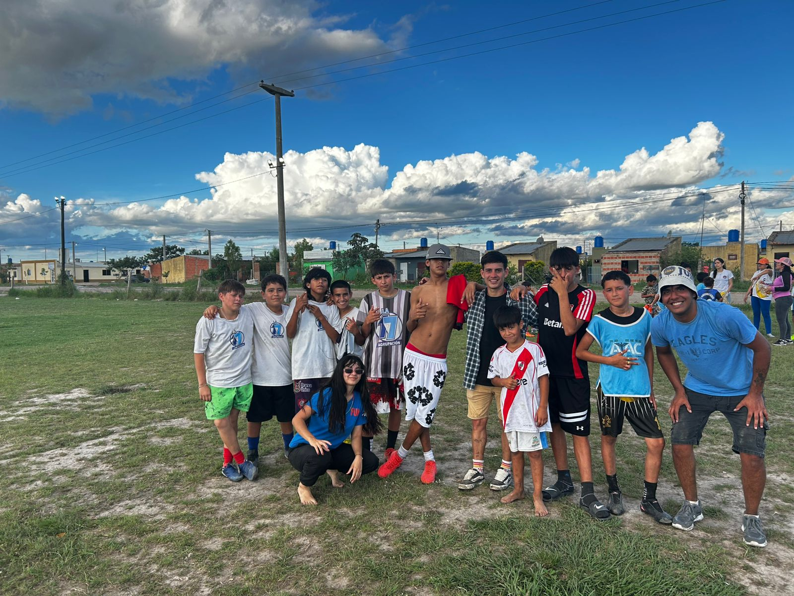

Proyecto Universitario Misionero
Misión y Oratorio estilo Salesiano
Misión y Oratorio estilo Salesiano
Somos jóvenes estudiantes y/o trabajadores que realizamos misión y oratorio al estilo de Don Bosco, acompañando a niños, jóvenes y familias con alegría y fe.
“Basta que sean jóvenes para que los ame”
Actualmente misionamos en el Barrio Lote 110 de la ciudad de Formosa.
📅 Sábados
⏰ 15:30 hs
📍 Frente al Santuario Divino Niño Jesús
Nuestra misión se realiza durante tres años consecutivos en el mismo lugar, especialmente en vacaciones de invierno y verano.
Actualmente, nuestra misión larga se está llevando a cabo en Punta Guía.










Si tenés entre 18 y 35 años y querés conocer más de lo que hacemos o formar parte, te invitamos a seguirnos en Instagram y unirte a nuestro grupo.
Ver Instagram